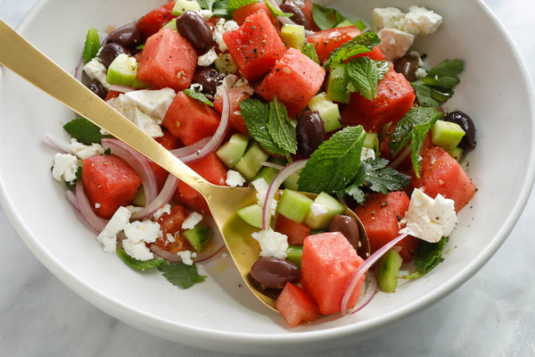

Watermelon Salad

Description
It's not an immediately obvious combination: watermelon, cucumber, olives and feta; but one bite will leave you convinced that this savory-sweet summer salad is something truly special. The astringent punch of the olives and feta provides a sophisticated counterpoint to the watery mellowness of the melon and cucumber. With a hunk of bread, it's a lovely light lunch; with practically any grilled meat or fish, it's an ideal summer supper.
Ingredients
- 3 cups cubed watermelon
- 2 large ripe tomatoes
- 1 medium cucumber
- 1 small red onion
- A few pitted olives of your choice
- A scoop of crumbled feta cheese
- Some chopped parsley and mint
- Olive oil and red wine vinegar
- Salt and pepper to taste
Method
- Chop the watermelon and tomatoes into bite-sized pieces.
- Peel, seed and chop the cucumber. Slice the onion.
- Finely chop the parsely and mint.
- In a large bowl combine watermelon, tomatoes, cucumber, onion, olives, feta, parsley and mint.
- Drizzle with olive oil and red-wine vinegar, sprinkle with salt and pepper, toss and serve.